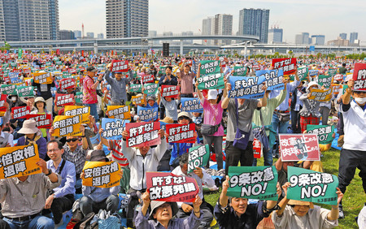

The origins of Japan’s modern constitution and specifically Article 9, is a subject of much debate within the country. Given that the constitution was written and promulgated during the American Occupation period, some prefer to see Article 9 as a foreign “imposition”.[1] Others argue that, shocked by the destruction of the war, it emanated from Japanese leaders themselves, intent on preventing the repetition of such events.

With the current power of the LDP, Prime Minister Abe has potentially enough votes to push through a proposal to a national referendum as the majority of the Diet supports constitutional change to some degree. The LDP will need the support of its ally, Komeito, which is more cautious on the amendment issue. The Kibo no To Party supports revision in principle, but not necessarily under an Abe Premiership. The Constitutional Democratic Party, Democratic Party, and the Japanese Communist Party on the other hand, are against revising the constitution, but do not have enough votes in either houses of the Diet to block a proposal on their own.[2][3]
[1] “Amending Japan’s Pacifist Constitution - Article 9 and Prime Minister Abe.” Institute for Security and Development Policy, 2019, isdp.eu/publication/amending-japans-pacifist-constitution/.
[2] Johnston, Eric. “Abe Clears Decks for Debate on Amending Japan’s Constitution | The Japan Times.” The Japan Times, 3 Oct. 2019, www.japantimes.co.jp/news/2019/10/03/national/politics-diplomacy/abe-clears-decks-debate-amending-constitution/.
[3] Sieg, Linda. “Mission Unaccomplished — Abe’s Drive to Revise Pacifist Constitution | The Japan Times.” The Japan Times, 19 Nov. 2019, www.japantimes.co.jp/news/2019/11/19/national/politics-diplomacy/shinzo-abe-revise-constitution/.